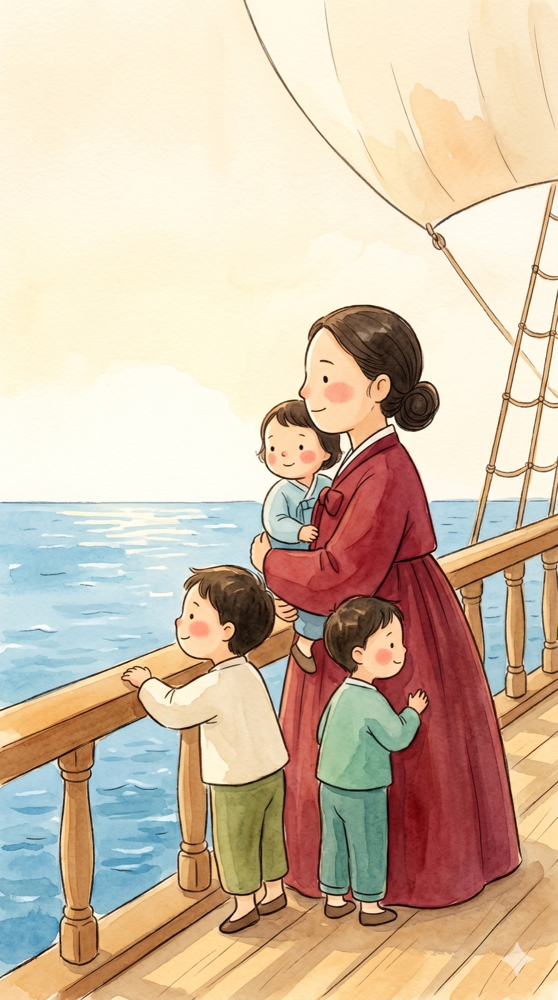

Maria Hwang
The Brave Mom Who Crossed the Sea
1865–1937 · A founding mother and a kind teacher
Maria Hwang was born in Korea a long, long time ago. She had a big, warm heart. She loved to learn new things.
But back then in Korea, girls and women were not allowed to do many things. Maria could not be all that she dreamed. That made her sad.
So Maria was brave. She wanted a better life for her three children. One day, she took them on a big ship. They sailed and sailed across the wide blue sea, all the way to Hawaii.
In Hawaii, many Korean families worked on the farms. Their children needed a teacher. So Maria taught them! She showed the children how to read and write. She told them about Korea, far away. The children loved her.
Maria saw that the women needed help too. So she started a special club, just for them. It was the very first one in Hawaii! The women came together. They helped each other. They sent help to Korea, their old home.
Maria worked hard all her days. She is one of Korean America's "founding mothers." Because of her, so many families felt safe and strong.
What we can learn: When you are brave and kind, you can help your whole family and many friends too.